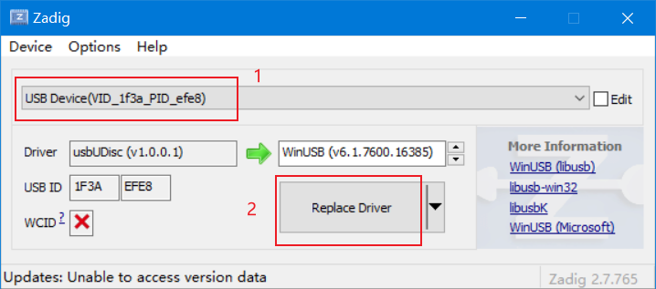

d1-nezha平台简介
D1是全志推出的基于平头哥c906 riscv64处理器的开发板。
参数规格
CPU
阿里平头哥玄铁C906主核，64bit RISC-V指令集
32 KB I-cache + 32 KB D-cache
DSP
HiFi4 DSP 600MHz
32 KB I-cache + 32 KB D-cache
64 KB I-ram + 64 KB D-ram
Memory
DDR2/DDR3, up to 2 GB
SD3.0/eMMC 5.0, SPI Nor/Nand Flash
Video Engine
Video decoding
- H.265 up to 1080p@60fps, or 4K@30fps
- H.264 up to 1080p@60fps, or 4K@24fps
- MPEG-1/2/4, JPEG, VC1 up to 1080p@60fps
Video encoding
- JPEG/MJPEG up to 1080p@60fps
- Supports input picture scaler up/down
Video OUT
RGB LCD output interface up to 1920 x 1080@60fps
Dual link LVDS interface up to 1920 x 1080@60fps
4-lane MIPI DSI interface up to 1920 x 1080@60fps
HDMI V1.4 output interface up to 4K@30fps
CVBS OUT interface, supporting NTSC and PAL format
Video IN
8-bit parallel CSI interface
CVBS IN interface, supporting NTSC and PAL format
Audio
2 DACs and 3 ADCs
Analog audio interfaces: MICIN1P/N, MICIN2P/N, MICIN3P/N, FMINL/R, LINEINL/R, LINEOUTLP/N, LINEOUTRP/N, HPOUTL/R
Digital audio interfaces: I2S/PCM, DMIC, OWA IN/OUT
Connectivity
USB2.0 OTG, USB2.0 Host
SDIO 3.0, SPI x 2, UART x 6, TWI x 4
PWM (8-ch), GPADC (2-ch), LRADC (1-ch), TPADC (4-ch), IR TX&RX
10/100/1000M EMAC with RMII and RGMII interfaces
Package
LFBGA BGA13*13/0.35/0.65mm,337 PINS
Chip process
22nm
功能支持
- [x] OpenSBI固件
- [x] 内存管理
- [x] 上下文切换
- [x] 定时器时钟
- [x] 原子操作
- [x] 内存屏障
- [ ] SMP多核
- [x] MMU支持
- [x] 中断管理
- [x] 系统调用支持
- [x] 执行用户态程序
- [x] 串口输入输出
- [x] 通过单元测试和集成测试
- [ ] gdb调试
运行方法
运行前注意
- 在插入串口的时候，需要注意串口的TX,RX,GND引脚的位置。
- 插入电源的时候，要注意插入到带有OTG字样的Type-C接口的位置。

- windows中需要先安装libusb驱动，xfel才能识别该设备。
在执行 make prepare 后，会在 src/platform/d1/tools/xfel/Drivers 目录下有一个 zadig 软件。
运行之后，点击 options->ListAllDevice。
然后，先按住开发板上面的 FEL 按键，再把电源插入电脑的USB接口。
此时就会看到一个新的设备 USB(VID_1f3a_PID_efe8) 出现，我们需要将该设备的驱动替换为 winusb驱动即可。
如果在以后的使用中，make run 总是提示找不到FEL设备，则需要重新来安装该驱动。

命令行
# 1. 进入nxos源码，打开终端。
# 2. 初始化环境
source setup.sh riscv64-d1 # linux
setup.bat riscv64-d1 # windows
# 3. 为第一次运行做准备，只需要第一次的时候运行
make prepare
# 4. 获取默认配置
make defconfig
# 5. 按住开发板的fel按键后，把电源插上，再松开fel按键，进入fel模式。
# 6. 编译运行
make run -j8 # -jN是多线程编译
# 7. 直接拔掉电源 退出d1的运行